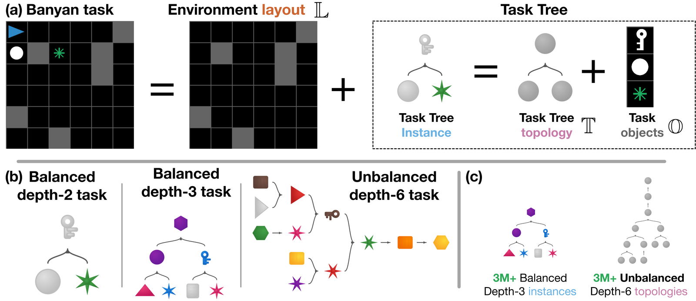
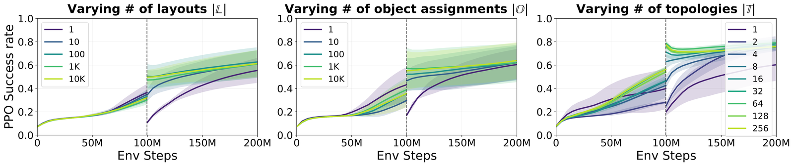
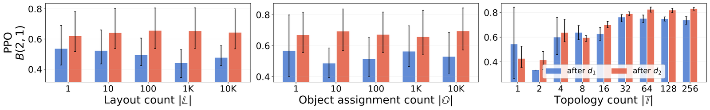
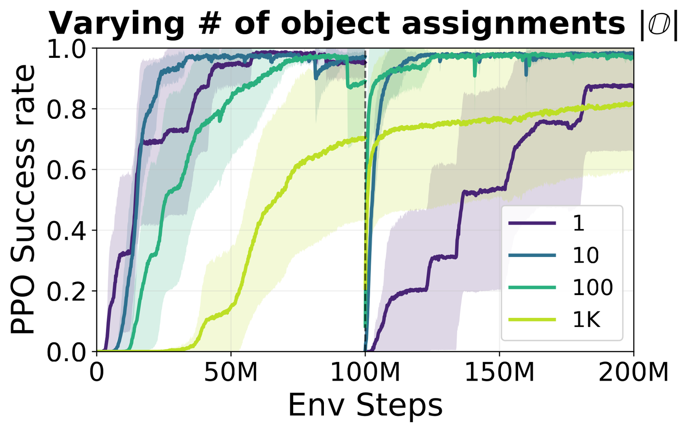
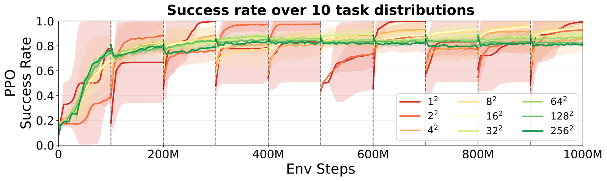
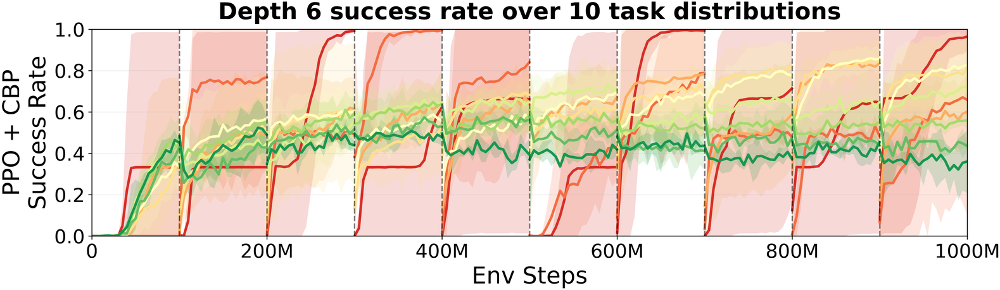
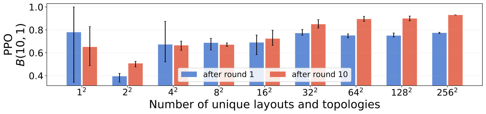
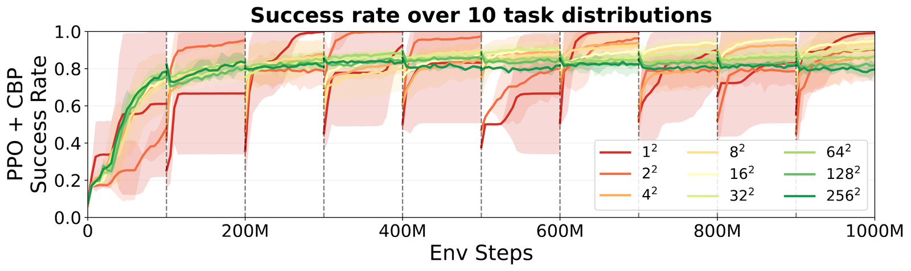

Task diversity produces systematic transfer
but inhibits continual reinforcement learning
Task variety is supposed to make reinforcement learning agents generalize. Across a changing sequence of tasks, we find the reverse: past a point, more variety makes an agent plateau at a lower level. It keeps learning each new set of tasks, but stops gaining from one set to the next.
Each Banyan world is a map the agent moves through, paired with a goal that splits into sub-goals arranged as a tree. The agent sees only the top goal, never the tree, and has to discover the order things must be done.
Task variety is the usual recipe for getting agents to generalize. We asked what it does when an agent's tasks never stop changing, and the answer runs both ways. More variety helps the agent pick up each new set of tasks: it starts near where it left off instead of relearning from scratch. But across many sets in a row, that same variety holds it back: its performance on each new set levels off at a lower ceiling instead of climbing higher than the last. The agents trained on the most varied sets keep getting better at their old tasks even as their gains on new ones flatten.
- Barely any dropWith enough variety, an agent starts a new set of tasks near where it left off, instead of relearning from scratch.
- A middle amount winsAcross ten sets of tasks in a row, the agent keeps improving most at moderate variety (16 layouts × 16 tree shapes).
- Too much backfiresPush variety higher and success on the final set drops (0.95 to 0.80): the agent stops climbing from one set to the next.
Here is the whole finding in four steps, from the tool we built to the result that surprised us.
- A simulator that turns task variety into a dial. Banyan is a fast, open simulator that lets us turn three ingredients of a task up or down on their own: the map layouts (𝕃) an agent navigates, the task-tree topologies (𝕋) that set how its sub-goals depend on one another, and the task-tree object assignments (𝕆) that fill those sub-goals with concrete objects. Together they define billions of tasks, and it runs on an academic budget.
- One new set of tasks: the relearning disappears. Give an agent a new set of tasks, and more variety along any one of those three ingredients lets it start near where it ended the last set, instead of relearning from scratch. This holds for two standard RL algorithms, PPO and PQN.
- Ten sets in a row: the story flips. Chain ten sets of tasks one after another, and long-run success peaks at a middle amount of variety (16 layouts by 16 topologies), then steadily declines as variety grows. More variety, less improvement over the long run.
- What stalls is specialization, not learning. That same variety keeps lifting the agent's performance on its first set of tasks even as its progress on new sets flattens. The agent is learning the structure shared across tasks while losing the ability to specialize to any one of them.
Variety is the standard route to generalization
This recipe has a strong track record.
Domain randomization varies an environment's visual and physical properties so that a policy trained only in simulation works on a real robot. XLand trained agents on a huge space of games, and they then solved millions of unseen ones with no extra training. Lake and Baroni showed that the right set of training tasks can even teach a neural network to generalize compositionally, a question open since Fodor and Pylyshyn first raised it.
Almost all of this evidence tests an agent after training has stopped, with its weights frozen. Nobody has asked what task variety does while the agent is still learning, as it moves through one new set of tasks after another. That is the question Banyan is built to answer.
Banyan: turn the ingredients of a task into dials
A Banyan task is a small world the agent moves through, plus a goal. The goal splits into sub-goals, and those sub-goals are arranged as a tree. We can dial three ingredients of the task on their own: the map layouts (𝕃) the agent navigates, the task-tree topologies (𝕋) that set how the sub-goals depend on one another, and the task-tree object assignments (𝕆) that decide which concrete objects fill each sub-goal. Varying one at a time is what lets us pin an effect on a specific kind of variety rather than on variety in general.
Trees are a useful way to describe a task because most tasks can be written as trees, including language. When we change a tree's topology, we change the compositional structure of the task: which sub-goals must be solved, and in what order. That makes topology the ingredient where compositional structure should matter most, and it is the one to watch.

One change of tasks: the relearning vanishes
Start by changing the agent's tasks just once, from a first set to a second. The moment the tasks change, performance usually drops and the agent has to relearn. We call the size of that drop the transfer gap: how far the agent falls, and so how much it must relearn. Increasing the variety along any one of the three ingredients shrinks this gap toward zero. The agent begins the second set near the performance it reached on the first, even when the best strategy for the two sets is different. This holds for both PPO and PQN.

Only the tree shape helps old tasks
Now look the other way. Backward transfer asks how the agent's skill on an earlier set of tasks changes after it trains on a later one. Here the three ingredients come apart. Adding more layouts or more object assignments does almost nothing. Adding more topologies makes a large difference. This holds for both PPO and PQN, and it is the first sign that what the agent carries forward is compositional structure, not surface detail.

The effect is not an artifact of grid-worlds
To check that none of this depends on a grid world, we built a continuous-control version of Banyan, where the agent drives a point mass into objects to push them around. The effect persists: more variety still improves how the agent both starts on new tasks and holds onto old ones.

Across ten sets of tasks, variety holds the agent back
What happens across a sequence of ten sets of tasks, one after another? We grow two ingredients together, the number of layouts and the number of topologies, and let a single agent learn through all ten in turn. The quantity to watch is the success rate the agent reaches by the end of its tenth set. Plot that against variety and the trend inverts: the final success climbs to a peak at a middle amount of variety, then falls the more we add.
At that middle amount of variety (16 layouts by 16 topologies) the final success climbs with each new set: the agent gets better and better at picking up the next one. Past that point, more variety steadily lowers it. As variety grows from 16 toward 256, the final success rate falls in order, from about 0.95 to 0.91, 0.86, 0.82, and 0.80. The same variety that smooths every single change is what flattens the long run.


What stalls is not learning, but specialization.
Here is the strange part. The more variety an agent has seen, the better it keeps getting on its very first set of tasks, even as its gains on new ones level off. The agent trained on the most varied sets is still improving on its old tasks while its progress on new ones plateaus.
The two halves fit together once you see what the agent is learning. It is picking up the structure shared across tasks, and that shared structure is exactly what lifts the old sets. What it loses is the ability to specialize to whatever is new in the set in front of it. Varied early sets interfere with later ones. Variety buys a general solution at the cost of a sharp one.

Is this just loss of plasticity? We don't think so
The obvious suspect is loss of plasticity, the network slowly going rigid until it can no longer learn. We tested that directly. Continual Backprop, a method built to keep networks plastic, does not recover the lost progress. Making the network bigger does not seem to either, though that result is still being finalized. The likeliest explanation is interference: the structure shared across sets, which the agent keeps consolidating, competes with the specialization each new set demands.

Methods & experimental detail
Each task is built by drawing a layout from a precomputed pool and a task tree from a precomputed set of distinct trees. A tree's topology fixes its depth, its branching, and whether each node transforms a single object or combines two, which together set which sub-goals must be solved and in what order. The objects that fill the leaves are placed on reachable tiles in the layout. The agent sees only the root of the tree as its goal. It never sees the tree itself, and has to learn which sequences of object interactions finish the task.
Single-shift study: PPO and PQN (Parallelized Q-Network), sweeping variety along each ingredient on its own. Ten-shift study: layouts and topologies grown together, with Continual Backprop and a capacity sweep as controls. Full hyperparameters, the other axes, and depth-wise breakdowns are in the paper.
The paper works through the other axes of variety, the continuous-control version, and the controls behind these claims.
📄 Read the paperBibTeX
Citation pending. Preprint; arXiv ID will be added once minted.@misc{seth2026banyan,
title = {Task diversity produces systematic transfer but
inhibits continual reinforcement learning},
author = {Seth, Purab and Shah, Neil and Jha, Kunal and
Gershman, Samuel J. and Kleiman-Weiner, Max and
Carvalho, Wilka},
year = {2026},
note = {Preprint.}
}